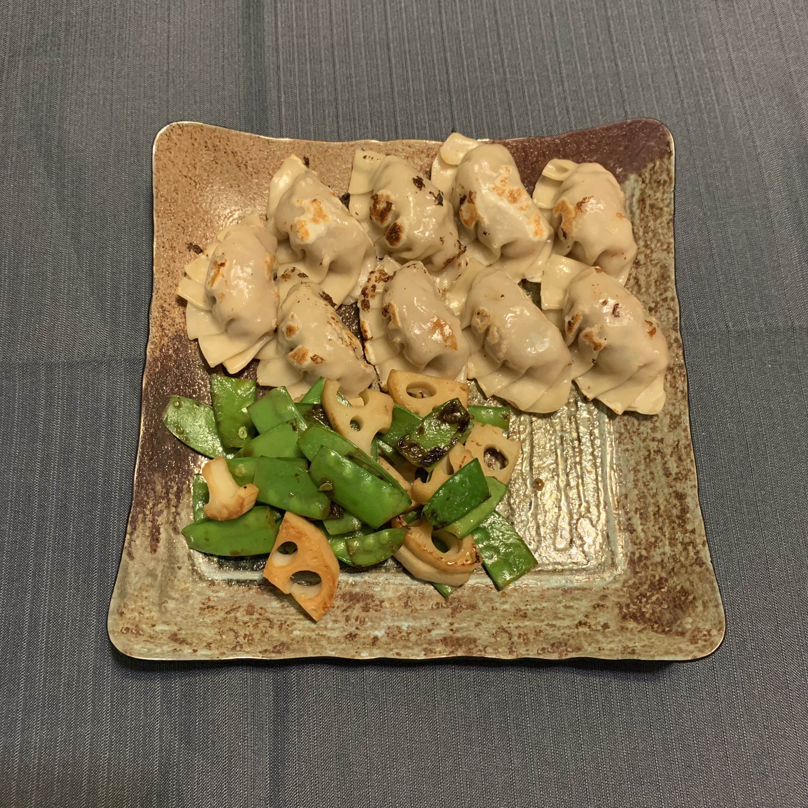

Gyoza

Gyoza is a type of dumpling popular in japan. Traditionally, they are filled with minced pork, cabbage and mushroom and seasoned with garlic, ginger and soy sauce.
Ingredients
- Minced pork
- Cabbage
- Mushrooms
- Garlic
- Ginger
- Soy Sauce
- dumpling wrapper
Steps
- Cut the cabbage and mushroom into small pieces
- Add salt to the cut cabbage and let the cabbage dehydrate
- Mix minced pork with the seasoning
- Knead it until the meat feels slimy
- Squeeze the water out of the cabbage
- Add the mushroom and cabbage to the pork mixture and mix well
- Wrap the mixture into dumpling wrappers
- Heat a pan and drizzle some oil
- Pan fry the dumplings